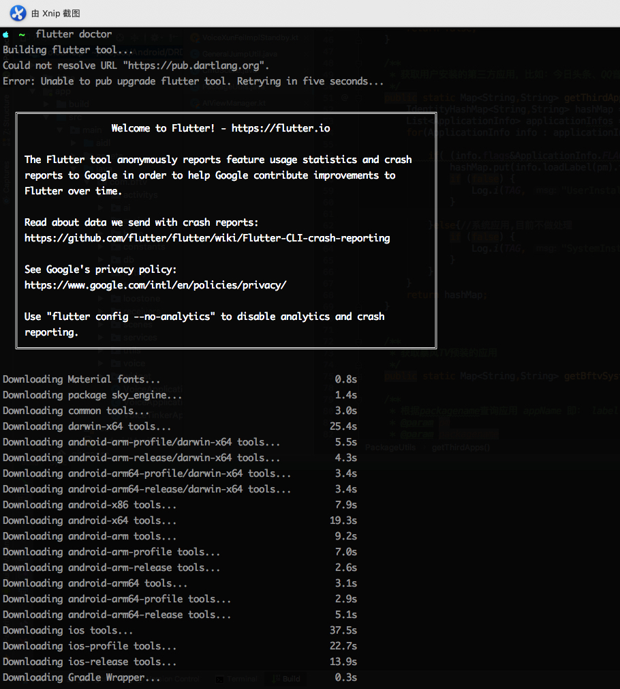

Flutter是谷歌的开发者推出的跨平台编程框架，用Dart语言进行开发，最终编译成arm字节码。
安装
环境：macOS
现在官网提供的安装方式是一个zip包，个人建议还是去git下载源码，可以方便切换分支和tag。
个人习惯安装到Application下。
Flutter环境
1 | git clone https://github.com/flutter/flutter.git /Applications/Flutter/ |
clone完成之后在.bash_profile中导入环境变量，并且初始化flutter1
2
3
4
5
6
7--------.bash_profile--------
#Flutter
export PATH=$PATH:/Applications/Flutter/bin
--------Run in Terminal--------
#检测自身完整性(自动下载依赖)
flutter doctor
与网速有关安装完大概是这样：

苹果调试
如果要测试苹果需要安装xcode:网页下载或者Appstore下载
1 | sudo xcode-select --switch /Applications/Xcode.app/Contents/Developer |
如果需要在真机上测试，需要额外安装几个插件：
确保已经安装homebrew1
2
3
4brew update
brew install --HEAD libimobiledevice
brew install ideviceinstaller ios-deploy cocoapods
pod setup
IntelliJ
安装Drat和Flutter插件后重启
创建一个Flutter工程
运行
连接Android设备直接Run即可。
总结
优点：
- 跨平台
- 一套代码方便维护
- 展现形式符合各自平台的使用习惯
缺点： - 要学习Dart语法
- 生成APK较大，测试一个HelloWord的apk大概30M
- 启动速度慢，不是较慢，是慢。。
以上是初次搭建平台，跑完HelloWorld之后的使用体验。可能有失偏颇。